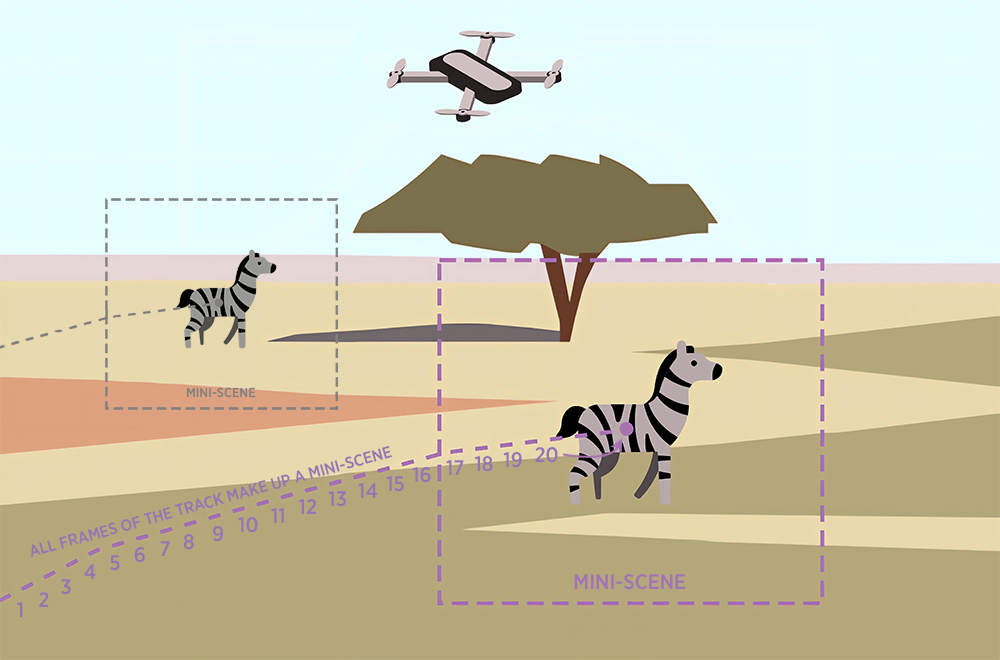

Jenna M Kline; Tanya Berger-Wolf; Daniel Rubenstein; Chuck Stewart, Christopher Stewart. (2023). Autonomous UAV Missions for Studying Wildlife Behavior: A Case Study for the Individual Identification of Zebras. Midwest Machine Learning Symposium. Chicago, IL.
Behavioral Traits from Videos

Project Members
Reshma R. Babu, Namrata Banerji, Julie Barreau, Tanya Berger-Wolf, Eduardo Bessa, Otto Brookes, Tilo Burghardt, Elizabeth Campolongo, Margaret Crofoot, Isla Duporge, Roi Harel, Maksim Kholiavchenko, Jenna Kline, Maksim Kukushkin, Stephen Lee, Jackson Miliko, Majid Mirmehdi, Michelle Ramirez, Neil Rosser, Daniel I. Rubenstein, Thomas Schmid, Alec Sheets, Sam Stevens, Charles V. Stewart, Matthew Thompson, Nina Van Tiel, and Scott Wolf
Project Goals
To analyze the behavior of baboons, zebras, and giraffes through the application of computer vision techniques by utilizing videos that were captured using drones in Kenya. With computer vision algorithms, the team is able to recognize a range of distinct behavioral patterns exhibited by the animals, including activities such as walking, grazing, auto-grooming, mutual grooming, trotting, running, drinking, herding, lying down, mounting-mating, sniffing, urinating, defecating, dusting, fighting, chasing, and more. This project highlights the potential of computer vision and artificial intelligence to enhance our understanding of animal behavior in the wild.
Project Overview
The approach of using computer vision to analyze animal behavior allows for a deeper understanding of the animals' behavioral trends, and can provide insights into their social structures, mating habits, and daily activities. By analyzing patterns of behavior over time, we may be able to identify changes in behavior that could be indicative of environmental or social stressors, disease, or other factors affecting the animals' well-being.
We collected video and gpa data to create "mini-scenes" for animal tracking, and trained computer models for behavior recognition. A mini-scene focuses on an individual and its surrounding environment, which are used to train the behavior recognition model. We have continued to use this mini-scene model to compensate for drone and animal movements and provide a focused context for categorizing individual animal behavior. We plan on using this structure to continue research into different species and their individual behaviors.
Related Publications
Tools & Repositories
- KABR DatasetA comprehensive dataset featuring over 10 hours of annotated drone video footage capturing behaviors of giraffes, Plains zebras, and Grevy's zebras in their natural habitats. The dataset includes eight behavior categories and is designed to support research in animal behavior recognition.
- BaboonLand DatasetA specialized dataset focusing on olive baboons, providing drone video data for detection, tracking, and behavior recognition. It encompasses approximately 30,000 images and offers a valuable resource for studying primate behavior in the wild.
- KABR ToolsA suite of tools developed to facilitate the preparation and annotation of the KABR dataset. These tools assist in tasks such as object detection, tracking, and conversion of annotations to various formats, streamlining the data processing pipeline for animal behavior analysis.
- KABR Telemetry DatasetThis dataset contains drone telemetry data associated with the KABR dataset, providing information about the drone's status during missions, including location and altitude, along with bounding box dimensions of wildlife in the frame and behavior annotation information.